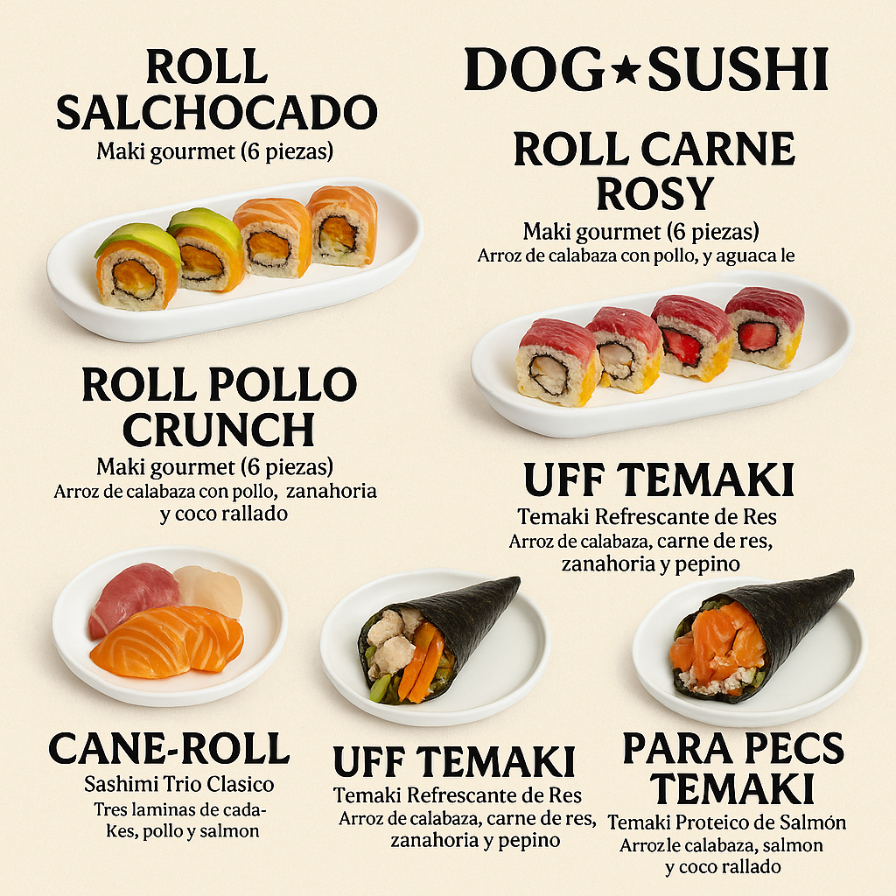

Algunos ingredientes
-

- arroz
- salmon
- pollo
- res
- frutas
- calabaza
- alga
- avena
Bienvenido a Dog-Sushi donde podras encontrar comida para tu peludo, al puro estilo japones, realizado con ingredientes que le encantaran y muy seguros, en el cual hay rollos, conos, nigiris, sashimis, todo adaptado a los requerimentos de cada una de nustras mascotas, tambien contamos con vento-box, esta le brindara una comida sana, balanceada y llena de sabor (alimentacion barf)
Dog-Sushi es una empresa dedicada a la preparacion de alimentos para perros y gatos, dandole un toque japones, donde todos los ingredientes, son cuidadosamente seleccionados y preparados, con la mejor higiene y profecionalismo, para que estes seguro que tu mascota esta consumiendo alimentos adecuados a su especie, estamos avalados por un grupo de veterinarios, nos basamos en la dieta barf para la preparacion de todos los malimentos. con ingredientes como: Salmon, pollo, res, calabaza, zanahoria, arroz, frutas...
| raza grande | raza mediana | raza chica |
|---|---|---|
| proteina recomendada | proteina recomendada | proteina recomendada |
| 450 gr | 300 gr | 200 gr |